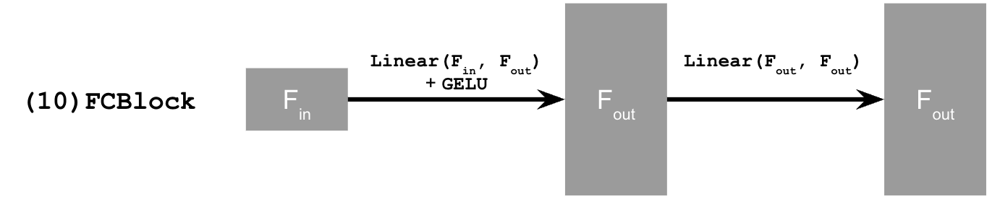

Visualizing Training and Sampling
Constructing Noisy Training Inputs
Write your explanation here: what you implemented, which settings you used, and what you observed.
Classical Denoising
Write your explanation here: what you implemented, which settings you used, and what you observed.
One-Step Denoising
Write your explanation here: what you implemented, which settings you used, and what you observed.
Visualizing Velocity
Write your explanation here: what you implemented, which settings you used, and what you observed.
Iterative Denoising with Euler Sampling
Write your explanation here: what you implemented, which settings you used, and what you observed.
Generating Images from Noise
Write your explanation here: what you implemented, which settings you used, and what you observed.
Conditional Generation and Guidance
Classifier-Free Guidance
Write your explanation here: what you implemented, which settings you used, and what you observed.
Creative Applications
Image-to-Image Editing
Write your explanation here: what you implemented, which settings you used, and what you observed.
Text-Guided Image Editing
Write your explanation here: what you implemented, which settings you used, and what you observed.
Visual Anagrams
Write your explanation here: what you implemented, which settings you used, and what you observed.
Hybrid Images
Write your explanation here: what you implemented, which settings you used, and what you observed.
Training a Single-Step Denoising UNet
Implementing the UNet
The warmup model is a one-step denoiser. A noisy MNIST digit z goes in, and the network Dθ is trained to return the clean digit x. The objective is an L2 loss, so the network is pulled toward the clean image rather than toward a probability distribution.
Dθ is a UNet: two downsampling stages, a 1×1 bottleneck, and two upsampling stages. Skip connections concatenate the encoder features back onto the decoder so the output can use both the coarse layout and the fine strokes. Hidden width D is the channel hyperparameter. For this denoiser, D = 128.
Each block is built from a few PyTorch layers. Conv keeps the resolution and only changes channels. DownConv halves height and width. UpConv doubles them. Flatten average-pools a 7×7 map down to 1×1, which is the size left after two halvings of a 28×28 digit. Unflatten brings that vector back to 7×7. Concat is torch.cat along the channel axis. ConvBlock, DownBlock, and UpBlock stack these so the network is deeper without changing the tensor sizes those blocks are responsible for.


Noising MNIST
Training pairs are built from clean training digits. Noise is added only after a batch is drawn, so every epoch shows the network a new draw of ε.
With x normalized to [0, 1], the seven noise levels to show are σ = 0.0, 0.2, 0.4, 0.5, 0.6, 0.8, 1.0. The digit should fall apart as σ grows.
Training the Denoiser
The network is trained to undo one specific noise level, σ = 0.5. It only sees the MNIST training split. The test set is used afterward to show a noisy digit next to the one-step reconstruction, after epoch 1 and after epoch 5.
Out-of-Distribution Noise
The denoiser never trained on any σ other than 0.5. The test is to hold one test digit fixed and run the trained model at σ = 0.0, 0.2, 0.4, 0.5, 0.6, 0.8, and 1.0. Reconstruction should be strongest near the training noise and fall off as the input moves away from it.
Denoising Pure Noise
To try one-step denoising as a generator, the clean image is thrown away and the input is pure Gaussian noise, z = ε. Training otherwise matches section 1.2.1: five epochs, and samples shown after epochs 1 and 5.
An L2 loss does not pick a random training image. It picks the prediction that minimizes the sum of squared distances to the images consistent with that input. With no structure left in z, that point is the centroid of the training digits, so the outputs tend to collapse toward an average digit rather than a specific 0–9.
Training a Flow Matching Model
Time Conditioning
One step is a poor generator, so the second model removes noise a little at a time. A sample starts at pure noise x0 and ends at a clean digit x1. Intermediate images are the straight line between them.
Small t stays near noise. Large t is almost the digit. The flow is the velocity of that line, which is constant along the path: the clean image minus the noise.
The UNet now has to know t. An FCBlock maps the scalar through a linear layer, GELU, and a second linear layer. Because t is one number, the first linear layer takes one input. t is scaled into [0, 1] before it is embedded. Two of these blocks modulate the bottleneck and the first upsampling stage, by multiplying those activations. The network’s output is the flow x1 − x0, which still contains both the digit and the noise that has to come off. It is not a prediction of the clean image by itself.

fc1_t = FCBlock(...)
fc2_t = FCBlock(...)
t1 = fc1_t(t) # t already in [0, 1]
t2 = fc2_t(t)
unflatten = unflatten * t1
up1 = up1 * t2
Training on the Flow
Each step draws a training digit, a random time, and a noise image, builds xt on the line between them, and steps Adam on equation B.5. Noise is still applied when the batch is fetched, not saved into the dataset.
Algorithm B.1 · Training
- Repeat.
- x1 ← a clean training image.
- t ← Uniform(0, 1).
- x0 ← N(0, I).
- xt = (1 − t) x0 + t x1.
- Descend on || (x1 − x0) − uθ(xt, t) ||².
Sampling
Sampling starts at Gaussian noise and follows the learned velocity with Euler’s method. Digits at this stage should be readable, not polished. Snapshots go in the report after 1, 5, and 10 epochs.
Algorithm B.2 · Sampling
- Input: T steps.
- x ← x0 ~ N(0, I).
- For t = 0, 1/T, 2/T, … stepping by 1/T:
- x ← x + (1/T) · uθ(x, t).
- Return x.
Class Conditioning
Class conditioning adds the digit label so sampling can ask for a specific number. The label c is a 10-dimensional one-hot vector, not a single scalar, so its FCBlocks take 10 inputs. On 10% of batches (puncond = 0.1) the label is replaced with the zero vector. That keeps an unconditional path in the same network, which is what classifier-free guidance needs at sample time. Time and class are injected together: the class embedding scales the activations, and the time embedding is added on top.
t1, c1 = fc1_t(t), fc1_c(c)
t2, c2 = fc2_t(t), fc2_c(c)
unflatten = c1 * unflatten + t1
up1 = c2 * up1 + t2Training with a Label
The loop matches the time-only trainer. The extra work is turning the MNIST label into a one-hot vector and occasionally wiping it out.
Algorithm B.3 · Class-conditional training
- x1, c ← image and label.
- Make c one-hot.
- With probability 0.1, set c = 0.
- t ← Uniform(0, 1), x0 ← N(0, I).
- xt = (1 − t) x0 + t x1.
- Descend on || (x1 − x0) − uθ(xt, t, c) ||².
Guided Sampling
At sample time the same network is run twice: once with the zero label, once with the requested one-hot class. Classifier-free guidance pushes the update from the unconditional flow toward the class flow. The scale used here is γ = 5. Class conditioning converges faster than time alone, so the report stops at 10 epochs and shows four samples of every digit 0–9.
Algorithm B.4 · Class-conditional sampling
- Input: one-hot c, guidance scale γ.
- x ← N(0, I).
- For each Euler step t:
- uuncond = uθ(x, t, 0), ucond = uθ(x, t, c).
- u = uuncond + γ (ucond − uuncond).
- x ← x + (1/T) · u.
- Return x.
What I Learned
To complete after the experiments: compare one-step and iterative denoising, describe how guidance changed the outputs, and discuss what worked or failed when training the MNIST models.